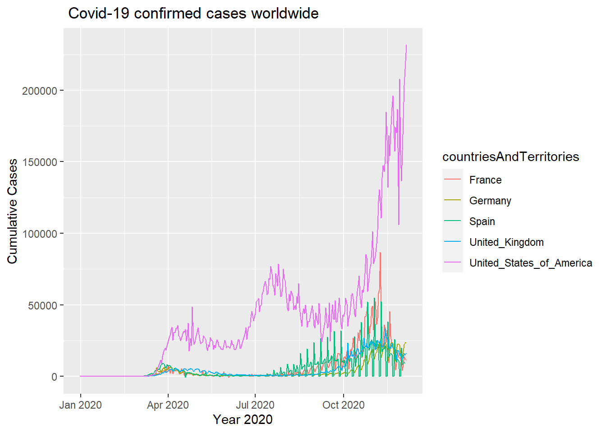
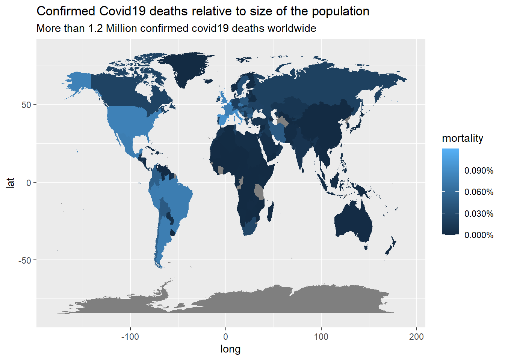

Journal (Business Data Science Basics)
Aashik Udupi
2020-12-05
1 Sales Analysis
1.1 Importing all required libraries
1.2 Importing Files
bikeshops_tbl <- read_excel(path = "C:/Users/Aashik Udupi/Desktop/R_Projects/00_data/01_bike_sales/01_raw_data/bikeshops.xlsx")
bikes_tbl <- read_excel(path = "C:/Users/Aashik Udupi/Desktop/R_Projects/00_data/01_bike_sales/01_raw_data/bikes.xlsx")
orderlines_tbl <- read_excel(path = "C:/Users/Aashik Udupi/Desktop/R_Projects/00_data/01_bike_sales/01_raw_data/orderlines.xlsx")1.3 Examining Data
bikeshops_tbl## # A tibble: 30 x 5
## bikeshop.id name location lat lng
## <dbl> <chr> <chr> <dbl> <dbl>
## 1 1 Zum Goldenen Lenker Berlin, Berlin 52.5 13.4
## 2 2 AlexandeRad Hamburg, Hamburg 53.6 10.0
## 3 3 Fahrradladen 16 Munich, Bavaria 48.2 11.6
## 4 4 Bikestation Köln Cologne, North Rhine-Westphalia 50.9 6.95
## 5 5 Montimare Frankfurt, Hesse 50.1 8.68
## 6 6 fahrschneller Stuttgart, Baden-Württemberg 48.8 9.18
## 7 7 Rad Ab Düsseldorf, North Rhine-Westph~ 51.2 6.79
## 8 8 Lucky Bike Dortmund, North Rhine-Westphal~ 51.5 7.47
## 9 9 Zweirad-Center Stadl~ Essen, North Rhine-Westphalia 51.5 7.01
## 10 10 WITT-RAD Bremen, Bremen 53.1 8.83
## # ... with 20 more rowsbikes_tbl## # A tibble: 231 x 9
## bike.id model model.year frame.material weight price category gender url
## <dbl> <chr> <dbl> <chr> <dbl> <dbl> <chr> <chr> <chr>
## 1 2875 Aeroa~ 2020 carbon 7.6 4579 Road - ~ unisex https:~
## 2 2873 Aeroa~ 2020 carbon 7.27 6919 Road - ~ unisex https:~
## 3 2874 Aeroa~ 2020 carbon 7.1 6429 Road - ~ unisex https:~
## 4 2876 Aeroa~ 2020 carbon 7.73 5069 Road - ~ unisex https:~
## 5 2877 Aeroa~ 2020 carbon 7.83 3609 Road - ~ unisex https:~
## 6 2225 Aeroa~ 2019 carbon 6.8 6139 Road - ~ unisex https:~
## 7 2091 Aeroa~ 2019 carbon 6.8 5359 Road - ~ unisex https:~
## 8 2086 Aeroa~ 2021 carbon 7.6 2629 Road - ~ unisex https:~
## 9 2088 Aeroa~ 2020 carbon 7.3 3699 Road - ~ unisex https:~
## 10 2120 Aeroa~ 2020 carbon 7.2 3219 Road - ~ female https:~
## # ... with 221 more rowsorderlines_tbl## # A tibble: 15,644 x 7
## ...1 order.id order.line order.date customer.id product.id quantity
## <chr> <dbl> <dbl> <dttm> <dbl> <dbl> <dbl>
## 1 1 1 1 2015-01-07 00:00:00 2 2681 1
## 2 2 1 2 2015-01-07 00:00:00 2 2411 1
## 3 3 2 1 2015-01-10 00:00:00 10 2629 1
## 4 4 2 2 2015-01-10 00:00:00 10 2137 1
## 5 5 3 1 2015-01-10 00:00:00 6 2367 1
## 6 6 3 2 2015-01-10 00:00:00 6 1973 1
## 7 7 3 3 2015-01-10 00:00:00 6 2422 1
## 8 8 3 4 2015-01-10 00:00:00 6 2655 1
## 9 9 3 5 2015-01-10 00:00:00 6 2247 1
## 10 10 4 1 2015-01-11 00:00:00 22 2408 1
## # ... with 15,634 more rows1.4 Split Location : City, State
bike_shops_wrangled_tbl <- bikeshops_tbl %>%
separate(col = location,
into = c("city", "state"),
sep = ",")
bike_shops_wrangled_tbl## # A tibble: 30 x 6
## bikeshop.id name city state lat lng
## <dbl> <chr> <chr> <chr> <dbl> <dbl>
## 1 1 Zum Goldenen Lenker Berlin " Berlin" 52.5 13.4
## 2 2 AlexandeRad Hamburg " Hamburg" 53.6 10.0
## 3 3 Fahrradladen 16 Munich " Bavaria" 48.2 11.6
## 4 4 Bikestation Köln Cologne " North Rhine-Westpha~ 50.9 6.95
## 5 5 Montimare Frankfurt " Hesse" 50.1 8.68
## 6 6 fahrschneller Stuttgart " Baden-Württemberg" 48.8 9.18
## 7 7 Rad Ab Düsseldo~ " North Rhine-Westpha~ 51.2 6.79
## 8 8 Lucky Bike Dortmund " North Rhine-Westpha~ 51.5 7.47
## 9 9 Zweirad-Center Stad~ Essen " North Rhine-Westpha~ 51.5 7.01
## 10 10 WITT-RAD Bremen " Bremen" 53.1 8.83
## # ... with 20 more rows1.5 Simplify the data
bikes_simplified_tbl <- bikes_tbl %>%
select(bike.id, model, price)
orderlines_simplified_tbl <- orderlines_tbl %>%
select(...1, order.id, order.line, customer.id, product.id, quantity)
bikeshops_simplified_tbl <- bike_shops_wrangled_tbl %>%
select(bikeshop.id, city, state)
bikes_orderlines_tbl <- left_join(orderlines_simplified_tbl, bikes_simplified_tbl, by = c( "product.id" = "bike.id"))
bikes_summary_tbl <- left_join(bikes_orderlines_tbl, bikeshops_simplified_tbl, by = c( "customer.id" = "bikeshop.id"))
bikes_summary_tbl## # A tibble: 15,644 x 10
## ...1 order.id order.line customer.id product.id quantity model price city
## <chr> <dbl> <dbl> <dbl> <dbl> <dbl> <chr> <dbl> <chr>
## 1 1 1 1 2 2681 1 Spec~ 3119 Hamb~
## 2 2 1 2 2 2411 1 Ulti~ 5359 Hamb~
## 3 3 2 1 10 2629 1 Neur~ 2729 Brem~
## 4 4 2 2 10 2137 1 Spee~ 1749 Brem~
## 5 5 3 1 6 2367 1 Stit~ 1219 Stut~
## 6 6 3 2 6 1973 1 Road~ 1359 Stut~
## 7 7 3 3 6 2422 1 Spee~ 2529 Stut~
## 8 8 3 4 6 2655 1 Infl~ 1559 Stut~
## 9 9 3 5 6 2247 1 Torq~ 3899 Stut~
## 10 10 4 1 22 2408 1 Ulti~ 6629 Augs~
## # ... with 15,634 more rows, and 1 more variable: state <chr>1.6 Sales by State
sales_by_loc_tbl <- bikes_summary_tbl %>%
select(state, price) %>%
group_by(state) %>%
summarize(sales = sum(price)) %>%
mutate(Total_sales_in_Euro = scales::dollar(sales, big.mark = ".",
decimal.mark = ",",
prefix = "",
suffix = " €"))
sales_by_loc_tbl## # A tibble: 12 x 3
## state sales Total_sales_in_Euro
## <chr> <dbl> <chr>
## 1 " Baden-Württemberg" 5128666 5.128.666 €
## 2 " Bavaria" 5089951 5.089.951 €
## 3 " Berlin" 847682 847.682 €
## 4 " Bremen" 8488909 8.488.909 €
## 5 " Hamburg" 2991365 2.991.365 €
## 6 " Hesse" 1242444 1.242.444 €
## 7 " Lower Saxony" 3245191 3.245.191 €
## 8 " Mecklenburg-Western Pomerania" 461118 461.118 €
## 9 " North Rhine-Westphalia" 16498928 16.498.928 €
## 10 " Saxony" 1707805 1.707.805 €
## 11 " Saxony-Anhalt" 465855 465.855 €
## 12 " Schleswig-Holstein" 2497572 2.497.572 €1.7 Bar Graph Plot
sales_by_loc_tbl %>%
ggplot(aes(x = state, y = sales)) +
geom_col(fill = "#2DC6D6") + # Use geom_col for a bar plot
geom_label(aes(label = Total_sales_in_Euro)) + # Adding labels to the bars
geom_smooth(method = "lm", se = FALSE) + # Adding a trendline
scale_y_continuous(labels = scales::dollar_format(big.mark = ".",
decimal.mark = ",",
prefix = "",
suffix = " €")) +
labs(
title = "Revenue by State",
x = "State",
y = "Revenue"
) ## Writing Files
## Writing Files
### Exporting to excel file
sales_by_loc_tbl %>%
write_xlsx("C:/Users/Aashik Udupi/Desktop/R_Projects/00_data/01_bike_sales/02_wrangled_data/sales_by_loc_tbl.xlsx")
### Exporting to csv file
sales_by_loc_tbl %>%
write_csv("C:/Users/Aashik Udupi/Desktop/R_Projects/00_data/01_bike_sales/02_wrangled_data/sales_by_loc_tbl.csv")
### Exporting to rds file
sales_by_loc_tbl %>%
write_rds("C:/Users/Aashik Udupi/Desktop/R_Projects/00_data/01_bike_sales/02_wrangled_data/sales_by_loc_tbl.rds")2 Data Acquisition
2.1 API
2.1.1 Importing Libraries
2.1.2 Importing data
fun_trivia <- GET('https://opentdb.com/api.php?amount=10')2.1.3 Exporting to a Tibble
fun_trivia %>%
.$content %>%
rawToChar() %>%
fromJSON() %>%
as_tibble()## # A tibble: 10 x 2
## response_code results$category $type $difficulty $question $correct_answer
## <int> <chr> <chr> <chr> <chr> <chr>
## 1 0 Science: Comput~ mult~ easy In any p~ 'For'~
## 2 0 History mult~ medium Which di~ Mao Zedong
## 3 0 History mult~ hard On which~ October 27, 19~
## 4 0 General Knowled~ mult~ hard What is ~ Feiji
## 5 0 Geography mult~ hard What is ~ Kaunas
## 6 0 Entertainment: ~ mult~ medium What is ~ Earth-199999
## 7 0 General Knowled~ mult~ medium What is ~ A flag
## 8 0 Entertainment: ~ mult~ hard What pro~ Java
## 9 0 Animals mult~ medium What is ~ Pan troglodytes
## 10 0 General Knowled~ mult~ medium Which co~ Belgium
## # ... with 1 more variable: $incorrect_answers <list>2.2 Scraping data from competitor Website
2.2.1 Importing Libraries
2.2.2 Extracting Data from Rosebikes Website
url <- "https://www.rosebikes.de/fahrr%C3%A4der/mtb"
rose_html <- url %>%
read_html()2.2.3 Bike Names
rose_bike_names <- rose_html %>%
html_nodes(css = ".catalog-category-bikes__title-text") %>%
html_text() %>%
str_extract("(?<= ).*(?=)") %>%
as_tibble()
rose_bike_names## # A tibble: 9 x 1
## value
## <chr>
## 1 CONTROL
## 2 MILLER
## 3 PEAK
## 4 BRUCE
## 5 SOLO
## 6 PATH
## 7 HILL
## 8 HILL TRAIL
## 9 FIRE2.2.4 Bike Cost
rose_bike_cost <- rose_html %>%
html_nodes(css = ".catalog-category-bikes__price-title") %>%
html_text() %>%
str_extract("(?<= ).*(?=)") %>%
as_tibble()
rose_bike_cost## # A tibble: 9 x 1
## value
## <chr>
## 1 1.699,00 €
## 2 1.999,00 €
## 3 3.099,00 €
## 4 <NA>
## 5 <NA>
## 6 1.849,00 €
## 7 2.599,00 €
## 8 2.899,00 €
## 9 2.149,00 €2.2.5 Bike Description
rose_bike_description <- rose_html %>%
html_nodes(css = ".catalog-category-bikes__subtitle") %>%
html_text() %>%
str_extract("(?<= ).*(?=)") %>%
as_tibble()
rose_bike_description## # A tibble: 9 x 1
## value
## <chr>
## 1 vielseitige Allrounder für Tour- und Trailspaß
## 2 für heftige Lines in technischem Gelände
## 3 Carbon-Trailbike mit Abfahrtsgenen
## 4 Wanted Dirtbike
## 5 Topseller-Hardtail für Gelände und Alltag
## 6 leichte Carbon-Hardtail für Highspeed im Gelände
## 7 vollgefedertes Carbon-Racebike für anspruchsvolle Strecken
## 8 Trail-Variante – Mehr Federweg für das schnelle Carbon-Racebike
## 9 Drop in die Welt des Freeride Mountainbikings2.2.6 Display details in a Tabular format
tibble(Bike_Model = rose_bike_names, Bike_cost = rose_bike_cost, Description = rose_bike_description)## # A tibble: 9 x 3
## Bike_Model$value Bike_cost$value Description$value
## <chr> <chr> <chr>
## 1 CONTROL 1.699,00 € vielseitige Allrounder für Tour- und Trailsp~
## 2 MILLER 1.999,00 € für heftige Lines in technischem Gelände
## 3 PEAK 3.099,00 € Carbon-Trailbike mit Abfahrtsgenen
## 4 BRUCE <NA> Wanted Dirtbike
## 5 SOLO <NA> Topseller-Hardtail für Gelände und Alltag
## 6 PATH 1.849,00 € leichte Carbon-Hardtail für Highspeed im Gel~
## 7 HILL 2.599,00 € vollgefedertes Carbon-Racebike für anspruchs~
## 8 HILL TRAIL 2.899,00 € Trail-Variante – Mehr Federweg für das schne~
## 9 FIRE 2.149,00 € Drop in die Welt des Freeride Mountainbikings3 Data Wrangling
4 Data Visualization
4.1 Challenge : Cumulative Covid Plot
4.1.1 Import Covid Data
covid_data_tbl <- read_csv("https://opendata.ecdc.europa.eu/covid19/casedistribution/csv")4.1.2 Simplified covid_data_tbl
covid_data_simplified <- covid_data_tbl %>%
select(dateRep, cases, countriesAndTerritories)4.1.3 Filter with countries & month
covid_data_countries_month <- covid_data_simplified %>%
filter(countriesAndTerritories %in% c("Germany",
"United_Kingdom",
"France",
"Spain",
"United_States_of_America")) %>%
mutate(date = lubridate::dmy(dateRep)) %>%
group_by(countriesAndTerritories, date) %>%
summarize(cumulative_cases = cumsum(cases)) %>%
ungroup()4.1.4 Plot the Cumulative Cases in year 2020
covid_data_countries_month %>%
ggplot()+
geom_line(aes(x = date, y = cumulative_cases, color = countriesAndTerritories))+
labs(title = " Covid-19 confirmed cases worldwide",
x = "Year 2020",
y = "Cumulative Cases"
) ### Challenge : Visualize distribution of mortality rate
world <- map_data("world")
covid_by_mortality_tbl <- covid_data_tbl %>%
mutate(across(countriesAndTerritories, str_replace_all, "_", " ")) %>%
mutate(countriesAndTerritories = case_when(
countriesAndTerritories == "United Kingdom" ~ "UK",
countriesAndTerritories == "United States of America" ~ "USA",
countriesAndTerritories == "Czechia" ~ "Czech Republic",
TRUE ~ countriesAndTerritories
))%>%
group_by(countriesAndTerritories, popData2019, deaths) %>%
summarise(total_pop = max(popData2019))%>%
summarise(total_death = sum(deaths))%>%
summarise(mortality = (total_death)/(popData2019))
class(covid_by_mortality_tbl)## [1] "tbl_df" "tbl" "data.frame"setDT(covid_by_mortality_tbl)
class(covid_by_mortality_tbl)## [1] "data.table" "data.frame"covid_by_mortality_tbl %>% glimpse()## Rows: 214
## Columns: 2
## $ countriesAndTerritories <chr> "Afghanistan", "Albania", "Algeria", "Andor...
## $ mortality <dbl> 1.955746e-05, 6.637724e-05, 9.476680e-06, 2...setDT(world)
world %>% glimpse()## Rows: 99,338
## Columns: 6
## $ long <dbl> -69.89912, -69.89571, -69.94219, -70.00415, -70.06612, -7...
## $ lat <dbl> 12.45200, 12.42300, 12.43853, 12.50049, 12.54697, 12.5970...
## $ group <dbl> 1, 1, 1, 1, 1, 1, 1, 1, 1, 1, 2, 2, 2, 2, 2, 2, 2, 2, 2, ...
## $ order <int> 1, 2, 3, 4, 5, 6, 7, 8, 9, 10, 12, 13, 14, 15, 16, 17, 18...
## $ region <chr> "Aruba", "Aruba", "Aruba", "Aruba", "Aruba", "Aruba", "Ar...
## $ subregion <chr> NA, NA, NA, NA, NA, NA, NA, NA, NA, NA, NA, NA, NA, NA, N...tic()
covid_by_map_tbl <- merge(x = world, y = covid_by_mortality_tbl,
by.x = "region", by.y = "countriesAndTerritories",
all.x = TRUE,
all.y = FALSE)
toc()## 0.03 sec elapsedcovid_by_map_tbl%>% glimpse()## Rows: 99,338
## Columns: 7
## $ region <chr> "Afghanistan", "Afghanistan", "Afghanistan", "Afghanistan...
## $ long <dbl> 74.89131, 74.84023, 74.76738, 74.73896, 74.72666, 74.6689...
## $ lat <dbl> 37.23164, 37.22505, 37.24917, 37.28564, 37.29072, 37.2667...
## $ group <dbl> 2, 2, 2, 2, 2, 2, 2, 2, 2, 2, 2, 2, 2, 2, 2, 2, 2, 2, 2, ...
## $ order <int> 12, 13, 14, 15, 16, 17, 18, 19, 20, 21, 22, 23, 24, 25, 2...
## $ subregion <chr> NA, NA, NA, NA, NA, NA, NA, NA, NA, NA, NA, NA, NA, NA, N...
## $ mortality <dbl> 1.955746e-05, 1.955746e-05, 1.955746e-05, 1.955746e-05, 1...setkey(covid_by_map_tbl, "region")
key(covid_by_map_tbl)## [1] "region"?setorder(region, -mortality, long, lat)
setorderv(covid_by_map_tbl, c("mortality", "region", "long", "lat"), order = -1)
covid_by_map_tbl%>%
ggplot() +
geom_map(aes(x = long, y = lat, map_id = region, fill = mortality),map = world) +
scale_fill_continuous(labels = scales::percent)+
labs(title = "Confirmed Covid19 deaths relative to size of the population ",
subtitle = "More than 1.2 Million confirmed covid19 deaths worldwide")